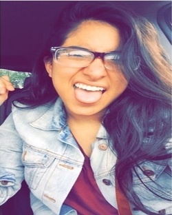
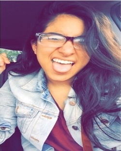
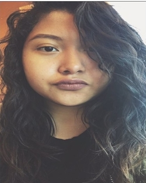
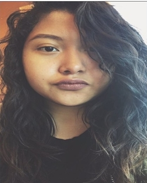
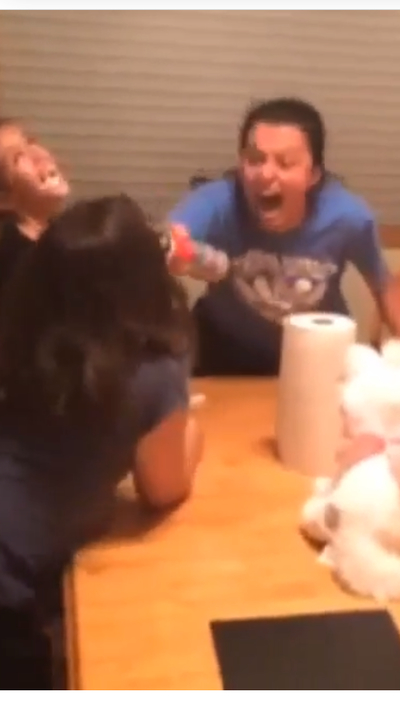
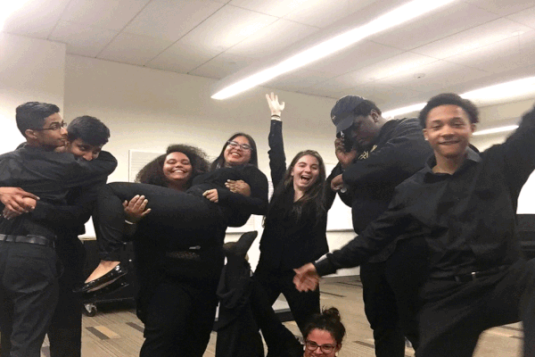

Friends
So I asked my friends for a small paragraph regarding their first experience at Molloy and how we met eachother.
BTW I've come to realize also that I have extremly good looking friends who all have very fire looking pictures
Click on a picture to see what they wrote. Click on their name to come back here.
 



 


Bethany Lindeblad
My first experience at Molloy was Accepted Students Day. I had not yet visited the college at any other point except for my audition for the music therapy program. When I arrived at the school I had no idea what was going to happen, but I can honestly say it was one of the greatest days. I met a group of people in my major that I bonded with instantly, and they are the reason I said "yes" to Molloy. Now, I can't imagine being anywhere else and without them.
Phil and I met in jazz band when he started playing the bass for us. We became true friends (in my opinion) where all music students bond- in the practice rooms of the basement in Public Square. I was able to talk to him for a long time and when we left, I knew for certain I knew we'd be good friends.

Gina Losquadro
So, my name is Gina Riley and/or Jess. When it comes to writing about myself oh boy, is it a mess
I seem to have some writers block but i'm a member of Molloy's dream team. My favorite color is good ol' yellow and i love all of the dank memes.
How did i meet Philip? I was late to an eventful night i was stuck in immense traffic indeed a beautiful sight
Liv happened to ask him what location they were at so she could send the address to me, because hey, screw google maps!
We were at a Molloy event, by the way. I saw School of Rock. We went to M&M World and the Kellogg's place after walking a couple of blocks.
I am grateful to had made memories so quickly and hopefully so is he from bonding over Supernatural to that "fabricated memory".
We rocked out to Spongebob remixes but maybe a little too far... considering Philip almost got a concussion from head-banging in his car.
This made school days quite enjoyable as opposed to the predictable bore. I'm thankful for these memories and here's to many more!
Jessica Martinez
Hello, My name is Jessica Martinez, I am currently a freshman at Molloy. I’m in the 5 year childhood / special education program with a concentration in Spanish!
I met Philip through friends. We all hung out a thursday night and although for the most part of that night we didn't get along, towards the end we discovered we had many thing in common! I’m glad we did and today we are great friends! We hang out almost every thursday night and there’s never a dull moment when he is around!
Rayaz Khan
Salutations! My name is Rayaz and I'm in my third year here at Molloy (where I mostly go by Ray). I'm pursuing a major in philosophy because I don't want a job and I'm also minoring in Spanish for fun, I guess.
When I first met Kenaz, he exuded a subtle, but undeniable quality of cool that I guessed would be accompanied by prodigious musical skill. In no time at all, he confirmed this hunch and also proved to be an uncommonly likable person. It's really extraordinary how quickly bonds formed through music can lead to heart to hearts. Jazz meets Tuesday and Thursday from 4:15-6:15 and Percussion meets Wednesday nights from 6:30-9:30. Our camraderie was only accentuated upon the discovery of our common background: We are brothers in Lumiére. He never invites me to Smash with him but it's OK because I still love him. In his defense, I am notorious for not existing whenever I'm not on campus. And yet, in spite of my ghosting, Phil is one of the select few with whom I've built this cherished bond.

Chloe Ambroise
Hello I'm Chloe! My first memorable experience here at Molloy College was probably desperately looking for my classroom in Kellenberg being that I didn't quite understand how to the room numbers worked quite yet! I wound up awkwardly walking into a senior class (of course my luck) and asked the professor where I would find the correct room. Luckily I eventually got there 45 minutes late to my first day. Fantastic.
I met Phil in our FST class our first semester together. We kind of just hit it off and slowly built our friendship from there. I'm really grateful to have him around here at Molloy being that he most certainly keeps me leveled and sane. I'm super happy he is apart of the music program now.
Rebecca Auty
My first experience at molloy was a very interesting one. I wasn't nervous walking into my classes. I had majority music classes and my first one was vocal tech and it was just 6 people so I was very confused of why it was so small and later that day we had sinfonietta and I didn't have my instrument and I was panicking bc i was going to have a bad impression if I didn't have so I have 25min to go to my house and back to get which and I got back right when the class started and I walked into a mob of people in and the first person I saw was Jan and he let everyone know I was cool and I played the trombone and answered every question for me.
I'm not sure how we met I want to say it was through shiloh and being in jazz together I think music just bought us together and we ended up just being friends sporadically. My favorite memory would have to be going to the puppy store and getting ice cream in between class with people from molloy and then going back to class extremely hyper and our professor thought we were insane but loved how we should him pics of dogs and he tried to act interested but I know he wasn't
Karla Umanzor
My name is Karla. I'm a freshman at Molloy College. In the beginning of the year, I thought that because I was a commuter, I wasn't going to spend that much time at school when I didn't have class, and that I would have a hard time meeting new people and actually making friends. I realize now that Molloy is so big on student involvement, and they make sure to have an fun event happening every minute they can to bring students closer. Molloy is such a cute school with such sweet people that just want to enjoy their college days, and I've enjoyed being part of this school so much.
I met Philip through Gina and Olivia, when we all volunteered for an event at Molloy. I think one of my favorite moments was when all of us stayed at school to play this card game. I'm pretty sure I've never laughed harder in my life. Everyone is just so funny and it makes me happy that we could have fun by just being with each other.

Aidan McGlone
My first experience at Molloy was seeing my brother perform in the jazz band and string ensemble. I always wanted to pursue music, but I did not want to go to the same college as him. One thing led to another and now I'm finishing my second year of the Music Education program.
I met Phil after hearing from Shiloh that there was a guy who plays bass in his FST class. A few days later they were sitting together and we were introduced. I remember trying to convince him to join jazz band because we needed someone to play bass. After spending time with all of us music majors, Phil became one himself. All together we're one big, funny, dysfunctional family.

Timothy David
My first year at Molloy was a combination of everything I expected and everything I didn't expect. Let me explain. While Molloy was my top college choice, I did not expect my first year to be as great as it turned out to be. My first semester at Molloy was one of adaptation. Really learning how to embrace my freedom as a college student and be responsible with it as well was my first semester summed up. Looking back on it, I came into Molloy without any high school friends, so it was pretty much a clean slate for me. I’m glad the music department is small, close, and connected the way it is because if not I don't think I would’ve met all my wonderful music major friends.
I met Phil through my music major friends that were trying to persuade him to become a music major. Eventually he joined the chamber ensemble and soon after that he was sharing the news that he is officially becoming a music major. There are so many memories that have been created throughout the past two semesters that I can't pinpoint the best out of all. I look forward to my remaining three years as music major at Molloy.

Shiloh Bennet
Coming to molloy for the first day I did not really know what to expect. I only knew my close high school friend Aidan Mcglone and I didn't even know if we had any classes together. When I walked in I couldn't help but feel nervous about making new friends and what people would think about me. I originally thought no one would bother to try to talk to me but that would quickly change. My first class was a vocal technique class and to my surprise everyone in the class was very open and nice. In this class I met Tim, Rebecca, and Randy. These three would be the first of many friends I would make that semester.
The first time I met Phil was in our FST class. At first I didn't really talk to him all that much but one day I heard him make a comment that he played the bass. After I heard that, I decided to do some recruiting for the jazz ensemble since we were in need of a bassist. I brought up the idea of joining and he actually agreed to join. After a couple of months Phil had already been recruited by the sinfionetta and was playing in two performing ensembles and wasn't even a music major. By the middle of the first semester Phil told all of us that he was music major and still a major in whatever the other major was. The rest is history